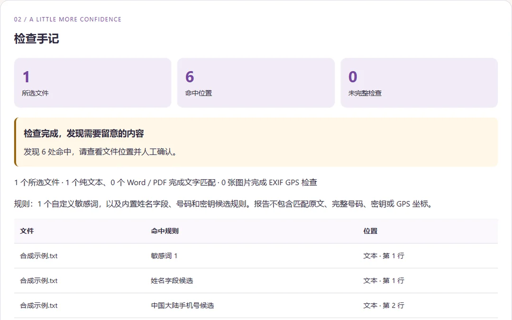

计算机视觉与三维感知
我对机器如何理解视觉世界保持好奇，也希望在持续的科研训练中，把理论、实现与实验联系起来。
国家级大学生创新训练项目 · 2026.01 起
多模态三维重建与理解
作为项目成员，参与面向稀疏多视角输入的三维重建与理解研究；负责数据采集与预处理模块，包括多视角采样、格式统一、可见性标注与数据加载。
指导教师：孙晓帅教授。项目进行中。
XIAMEN UNIVERSITY · CLASS OF 2028
Yueqi Chen
厦门大学信息学院 · 网络空间安全本科生。
关注计算机领域前沿发展，尝试开展计算机视觉研究，也参与开源实践。
在研究中求真，在创造中学习，也在与人同行时成长。
专业累计学业排名截至大二结束
所有课程加权绩点
本科生国家奖学金2024—2025、2025—2026 学年
累计志愿服务
CURIOSITY / 探索
从网络空间安全的课程学习，走向计算机视觉的科研训练。
我希望把“为什么”变成可以验证的问题，再用实践逐步回答。
我对机器如何理解视觉世界保持好奇，也希望在持续的科研训练中，把理论、实现与实验联系起来。
国家级大学生创新训练项目 · 2026.01 起
作为项目成员，参与面向稀疏多视角输入的三维重建与理解研究；负责数据采集与预处理模块，包括多视角采样、格式统一、可见性标注与数据加载。
指导教师：孙晓帅教授。项目进行中。
有一篇 CVPR 2027 在投。
结果未定，探索继续。
2024.09—2028.06（预计）
厦门大学 · 网络空间安全本科
CET-6：595 分 · CET-4：607 分
BUILD & SHARE / 创造
从学习和开发中的具体问题出发，把想法做成能试用的工具。
我希望源码、文档和验证过程，都能成为交流的一部分。
我做这些图文交互实验，希望让更多人理解计算机科学中的原理，也能从中找到值得继续研究的问题。可以先调一个参数、验证一个猜想，再了解它在实际任务中的用法，沿着论文和对照实验继续追问。
目录收录视觉几何、生成模型、检索与评估等实验。可以观察扩散去噪、验证回环何时修正轨迹，也可以沿着方法导读和论文做自己的对照实验。
结合我的网络空间安全专业，我也做了「网络与信息安全」专题。从一条网页请求出发，用瀑布图定位延迟，对照常见攻击与防护，再实际运行加密、哈希和签名，用全同态加密的教学模型试做密文计算。技术时间线串起古典密码、TLS、零信任、软件供应链与后量子密码，最后走到大模型系统的检索权限、提示注入和工具授权。
我尤其关注 RAG 与工具型智能体的安全和可靠性。权限沙盒展示系统在哪一步阻止越权；AI 安全评估实验则用同一批合成请求对照策略，把上下文曝光、越权放行与正常请求误拒分别计数。

模型怎样读懂文字和图像？
从分词到注意力，再到模型训练，19 个实验把计算过程呈现在眼前。点选图块、改变参数，比较前后的结果，逐步理解 Transformer、反向传播与泛化。

两台相机怎样看出远近？
拖动相机和星星，对照两幅画面里同一目标的位置。通过三个小挑战，观察距离、相机间距和测量噪声怎样影响深度估计，建立双目视觉的直觉。

三维重建，为什么要先检查数据？
先打开一份故意放入异常的示例报告，看看图像尺寸、相机参数和时间戳会出什么问题。再检查自己的图像与清单，认识数据质量与重建结果的关系。

公开文件时，哪些信息容易被忽略？
从合成样例的检查报告出发，认识照片 GPS、文档文字和扫描图片中的隐私线索。学习发布前该检查什么，也能在浏览器本地检查自己的文件。
多视角数据体检和「公开之前」都提供合成样例，读者也可以用自己的文件在本机检查。各项目的运行方式、示例来源和适用范围见项目说明。
 真实模板导出 · 展示内容为合成样例
真实模板导出 · 展示内容为合成样例让一个“为什么”，有迹可循。
记录课堂疑问，将解释关联到课程引用与资料版本，再通过独立作答复习。资料修订后，旧答案会进入待复核。
项目与 APK新会话，也能接住旧约定。
为 DeepSeek Harness 按工作区保存项目事实、决策和偏好，支持记忆更新与跨会话使用，让开发上下文有所延续。
网站与演示在阅读他人的代码、定位问题和补充回归测试中学习开源协作。
修复 JSDoc 注释转换中的提前闭合问题，避免自动修复把合法 JavaScript 变成语法错误。
修复 SSH 配置的 Include 解析，让一条指令中的多个路径按顺序展开，并补充回归测试。
截至 2026.11.21，fsspec 与 PEtab 的 PR 仍为 Open。
GROW TOGETHER / 同行
课堂、操场、集体与日常，都是大学生活的一部分。
我希望认真对待每一种经历，也把自己所学带到身边的人中去。
从计算机大类班级团支书，到网络空间安全班班长、团总支科创部部长，我参与组织班级与学院活动、传递消息、反映同学的需求。担任团支书期间，所在支部获评校“五四红旗团支部”。
服务同学是具体的工作：把一条通知说明白，把一件需要协调的事接过来，也为更多人参与科创创造机会。
两届校运会，女子铅球的名次向前了一步。接力、气排球和定向越野，则让我在个人挑战之外，体验团队一起投入的快乐。
参与“厦大，我想对你说”征文，作品收录于主题征文集《凤凰花开的日子》；学习笔记获校级“最美学习笔记”三等奖。整理知识与记录生活，都值得认真落笔。
参与暑期社会实践，获评厦门大学“暑期社会实践积极分子”。从科研数据的采集与整理，到日常活动的组织协调，我愿意把耐心放在具体工作里，让想法有机会落地。
MILESTONES / 足迹
荣誉是阶段性的记录，探索还会继续。
2024—2025、2025—2026 学年
团队获奖；同年获福建省赛特等奖
国家级 · 团队获奖
视觉智探 · 慧眼流析 · Super Story 人机协同小说创作网站 / 团队获奖
以及优秀共青团员、优秀团支部书记等荣誉
……
KEEP IN TOUCH / 联系
欢迎交流计算机视觉、开源项目，也欢迎聊聊校园与生活。
chenyueqi@stu.xmu.edu.cn